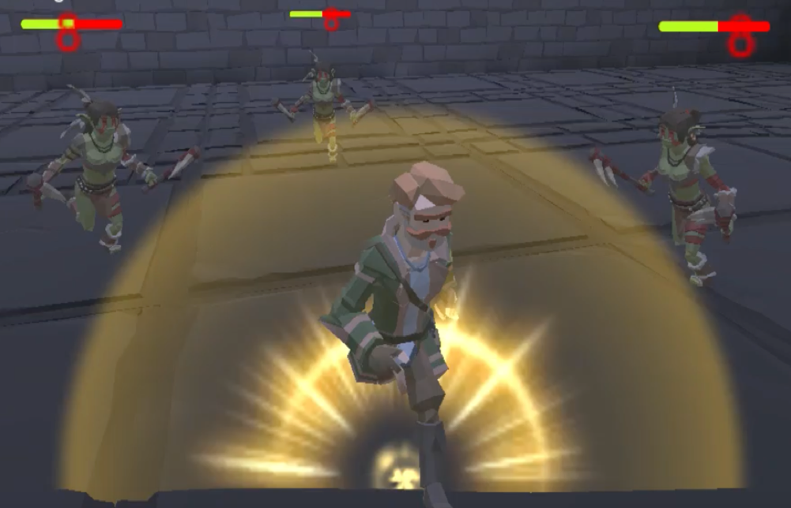
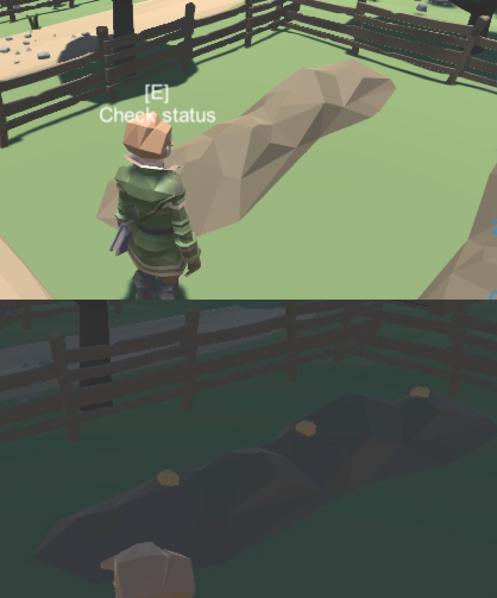
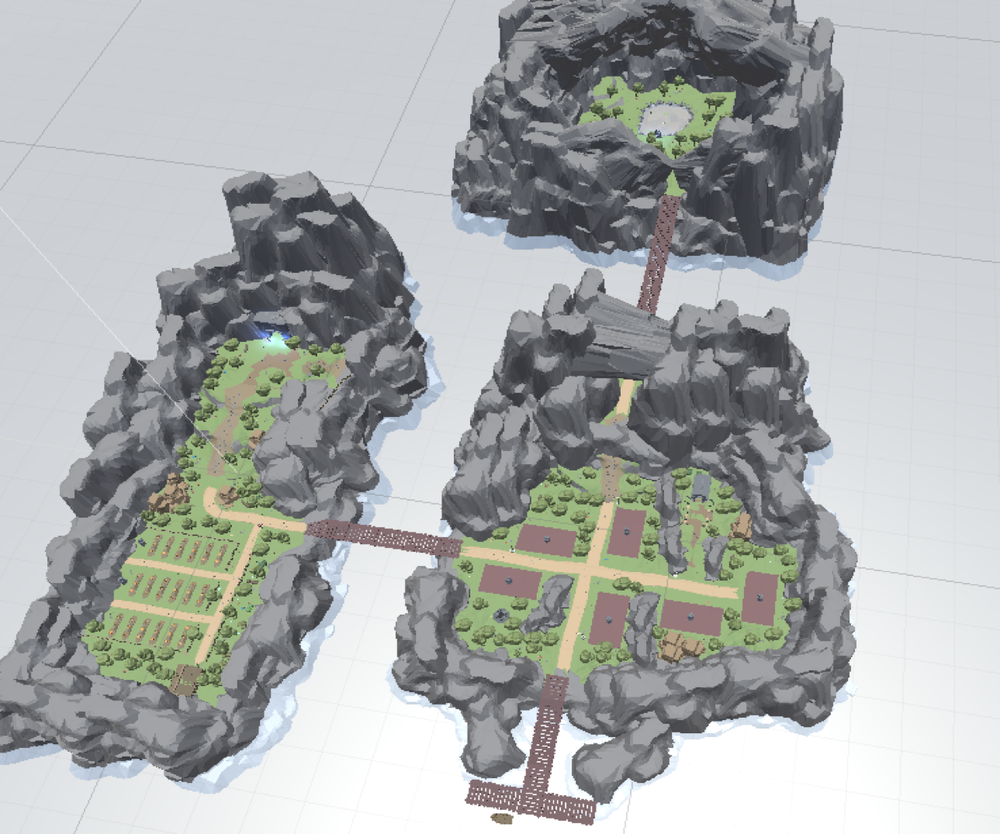
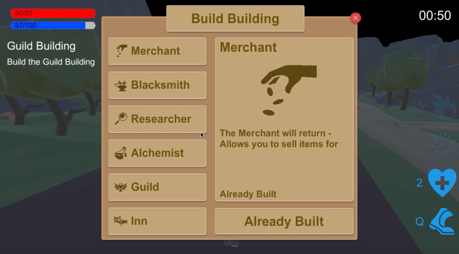
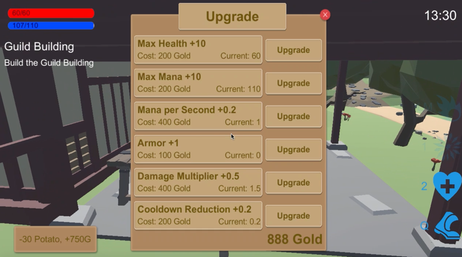
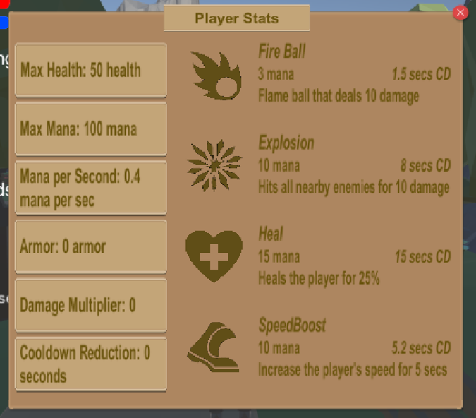
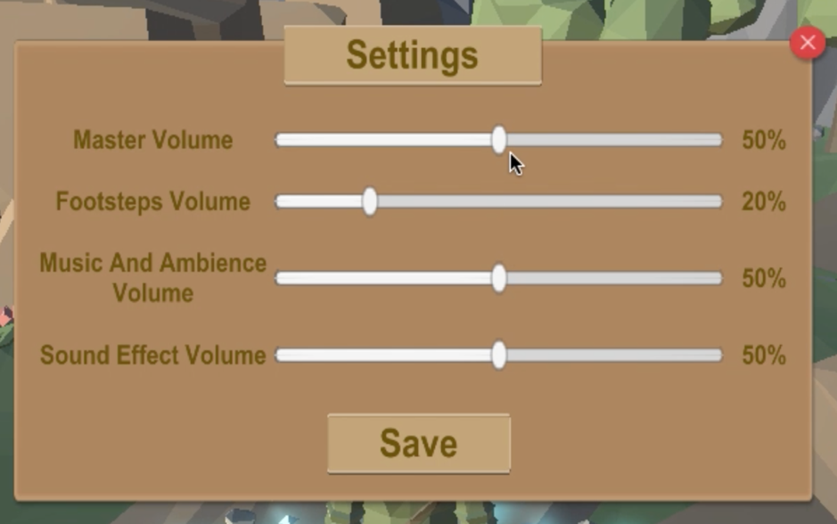

The Magical Farmer (2020)
A Unity 3D video game available on Mac and Windows, created in one month during an introduction to 3D video game programming class in South Korea.
Game summary: Once upon a time, there was a small village living in peace. But one day, monsters invaded the land, stealing and destroying everything. Having no choice, the villagers abandoned the land. But there was one person that still had hope: The Magical Farmer.
The player plays as the magical farmer. His main goal is to venture into the dungeon and fight waves of enemies. By defeating the waves, he can collect seeds which can be used to grow crops and build new buildings in the city.
Media








Main Features
- Fight 6 types of enemies using 4 different skills
- Collect seeds by defeating waves of enemies
- Plant seeds on your farm to get crops
- Use the crops to rebuild the village (6 different types of buildings)
- Become more powerful by interacting with the NPCs
- Complete a quest chain to unlock a secret zone
- Day/Night cycle with dynamic lighting and sound
- Try to reach the highest level in the 'Infinity Waves' Level
Watch a short video showing the Infinity Waves level.
Play the game online at magicalfarmergame.github.io.
Interested in the PC version? Contact me.